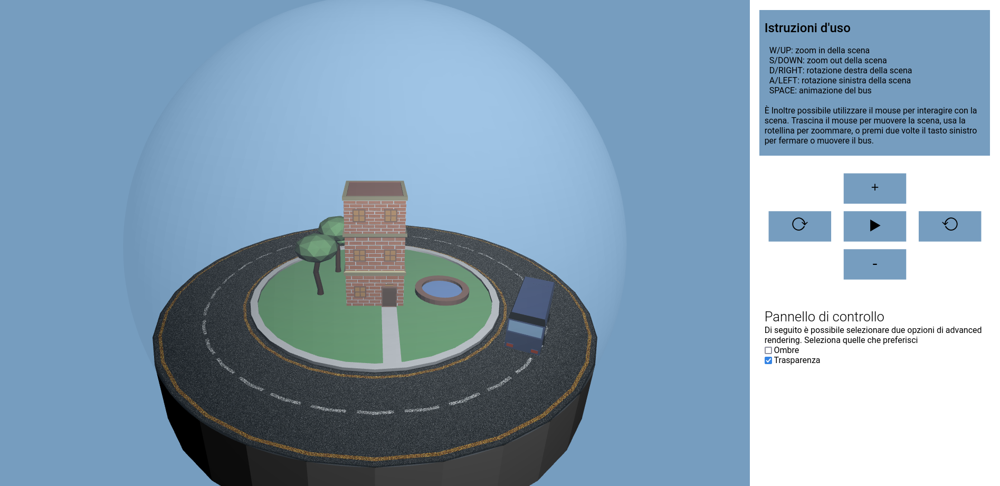
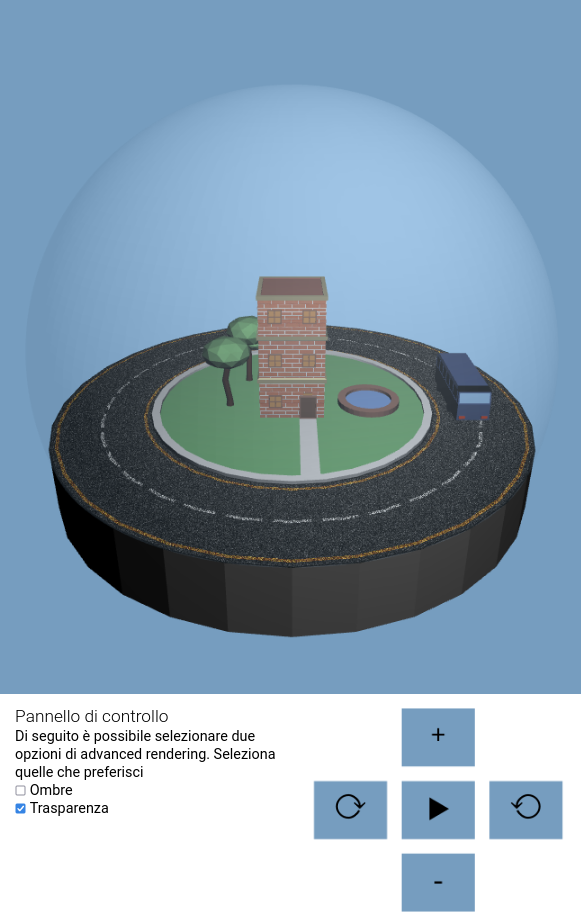
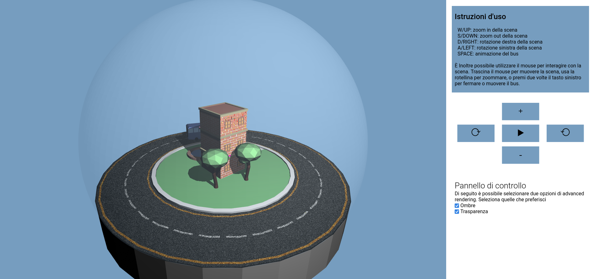
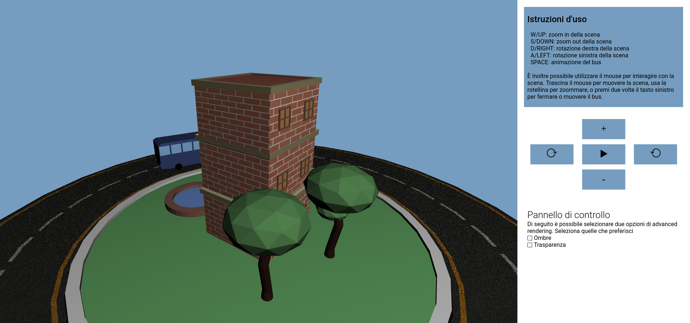
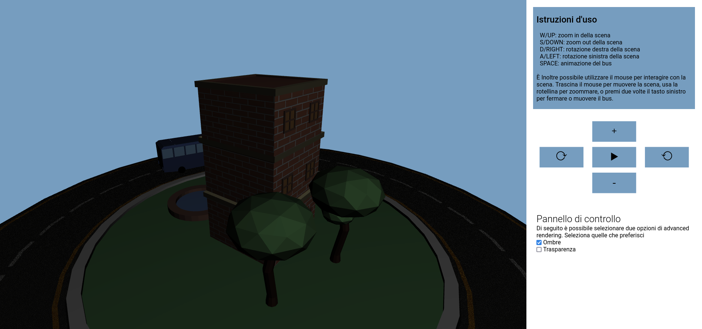

Progetto Computer Graphics
Anno Accademico 2021/22
Nicolò Pizzo
Introduzione
L'idea del progetto è quella di costruire un modello, ricoperto da un vetro, in cui si ha una scena con diversi
elementi grafici tridimensionali. Come vedremo, la scena ha diverse modalità di rendering avanzato, che ho impiegato
per rendere la scena più dinamica e interattiva. I modelli presenti sono stati creati personalmente attraverso
Blender. È inoltre presente un movimento autonomo di un modello nella scena; tale movimento permette di osservare
la scena in numerose prospettive, e mettendo in pausa l'animazione è anche possibile fissare una visualizzazione
della scena.
Presentazione dell'interfaccia
L'applicazione, nella sua visualizzazione desktop, si presenta con la scena sulla sinistra, mentre sulla destra si
hanno le istruzioni d'uso, il controller, e il pannello di controllo per le opzioni avanzate di rendering quali
ombre e trasparenza.

Nella sua versione mobile, i controlli ed il pannello si trovano in basse per dare più spazio alla visualizzazione
del canvas. In questa visualizzazione si perdono le istruzioni d'uso in quanto sono esplicative dell'uso di tastiera
e mouse.

I controlli
Le interazioni con la scena sono tre: la si può ruotare attorno all'asse Y, si può effettuare l'operazione di
zoom, ed infine si può arrestare o avviare l'animazione del bus. Tali operazioni sono possibili sia da tastiera
che mouse. Come si può vedere dalle istruzioni dell'applicazione, trascinando il mouse si può ruotare la scena,
mentre ci si può allontanare o avvicinare al centro della scena mediante la rotellina del mouse; per abilitare o
disabilitare il movimento del bus basta premere due volte il tasto sinistro del mouse. Attraverso la tastiera,
l'interazione è permessa attraverso le frecce direzionali o la combinazione W/A/S/D, mentre per l'animazione del
bus è possibile utilizzare la barra spaziatrice. Lato mobile è possibile scorrere il dito per ruotare la scena,
mentre le altre operazioni si possono effettuare per mezzo del controller; questo ha dei pulsanti che permettono
intuitivamente di comprendere quali siano le funzionalità ad essi collegati. Infine, il pannello di controllo
permette di scegliere alcune opzioni di renderizzazione avanzata; quelle che ho individuato più contestualizzate
e necessarie per una buona visualizzazione del progetto sono la trasparenza e l'impiego delle ombre. Di default
la trasparenza è attiva, mentre le ombre sono disabilitate.
Funzionalità
Di seguito vengono descritte le principali funzionalità del progetto, mostrando come queste sono implementate in
breve.
Mesh e Texture
Tutte le mesh presenti nel progetto sono state realizzate su blender in modo autonomo, utilizzando come guida
alcuni video su Youtube
[1,2]. Le texture dell'asfalto e della muratura del palazzo sono
state scaricate, per poi
essere applicate alle mesh in modo manuale tramite UV editing. Per importare correttamente le mesh e le texture
in WebGL ho fatto uso delle funzioni
ParseOBJ e
ParseMTL presenti nel file
utils.js;
tali funzioni sono delle rivisitazioni di quelle presenti sul sito WebGL Fundamentals
[3].
L'importazione delle mesh e delle texture avviene in particolare scorrendo una lista contenente i nomi delle
mesh contenute nella cartella
models. Su tali nomi viene invocata la funzione
setInScene che richiama telescopicamente le due funzioni esposte sopra, valuta i file, e costruisce
le strutture
parts e
material che verranno restituite; tali strutture contengono i
dati relativi ai materiali e al posizionamento delle mesh nella scena.
for (let model of [...models, 'cristallo']) {
const {materials, parts} = await setInScene(model, gl)
Materials = {...Materials, ...materials}
Parts = {...Parts, ...parts}
}
Shading
La tecnica di shading impiegata è il
Phong shading. L'implementazione prevede l'interpolazione
della normale al livello del singolo pixel per determinarne il colore; dunque per fare ciò ho inserito il
seguente codice nel fragment-shader.
vec3 N = normalize(normal);
vec3 L = normalize(u_lightPosition - vertPos);
float lambertian = max(dot(N, L), 0.0);
gl_FragColor = vec4((
ambient * u_ambientLight +
effectiveDiffuse * lambertian), opacity);
Si noti che, poichè non sono interessato alla luce speculare, non è presente il fattore di somma della luce
speculare. In caso contrario si sarebbe dovuto computare adeguatamente il fattore speculare e sommarlo a quelli
di ambiente e diffusione.
Rendering base
Nel caso in cui l'opzione di rendering di ombre sia disabilitata, viene effettuato il rendering di base; tale
tipo di rendering è stato mostrato nelle immagini precedenti, e permette l'impiego di texture ed illuminazione
diffusa. Il rendering avviene mediante la funzione render(), nella quale si configura il canvas in
modo corretto rispetto alla viewport, e si configurano adeguatamente le impostazioni della camera; infine, nel
caso del rendering di base, si costruisce una mappa che contiene i valori uniform da passare a
fragment e vertex shader. Infine viene richiamata la funzione renderMesh per ciascun modello
importato.
Trasparenza
Per abilitare la trasparenza ho abilitato la funzionalità gl.BLEND ed impostato
la funzione di blending adatta. Inoltre, è possibile attivare e disattivare tale funzionalità a livello visivo
mediante la relativa checkbox; a livello implementativo tale switch è permesso attraverso la variabile
booleana transparencyEnabled: in base al valore di tale variable, il vetro che
avvolge la scena viene renderizzata in modo coerente.
Rendering con ombre
Per effettuare il rendering con ombre ho adottato la tecnica dello shadowmapping; questa consiste nel
renderizzare due volte la scena: la prima volta questa viene renderizzata dal punto di vista della luce, mentre
la seconda viene renderizzata dal punto di vista della camera. Il primo rendering genera una mappa di profondità
che viene utilizzata per tenere traccia della distanza degli oggetti nella scena dalla sorgente luminosa.
Per implementare tale tecnica ho prima creato la funzione
prepareShadows che restituisce le
caratteristiche statiche delle ombre; dopodichè ho aggiunto due coppie di vertexShader e fragmentShader, una per
rendering.

La scelta della renderizzazione avanzata avviene per mezzo di una variabile booleana
shadowEnabled: nel caso in cui questa sia attiva, vengono utilizzate le coppie di shader descritte
precedentemente. L'unico elemento che non viene renderizzato in questa coppia di shader è il vetro che ricopre
la scena: se la trasparenza è abilitata il vetro viene renderizzato sugli shader di base, altrimenti anche esso
viene renderizzato sulle coppie di shader; è possibile infatti notare che, se le ombre sono abilitate e la
trasparenza disabilitata, l'intera scena è in ombra in quanto il vetro la ricopre interamente. Di seguito mostro
un confronto nel caso in cui la scena sia senza trasparenza: l'immagine sulla sinistra mostra la scena senza
ombre mentre quella sulla destra fa uso del rendering con ombre.


Riferimenti